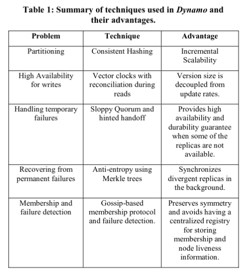
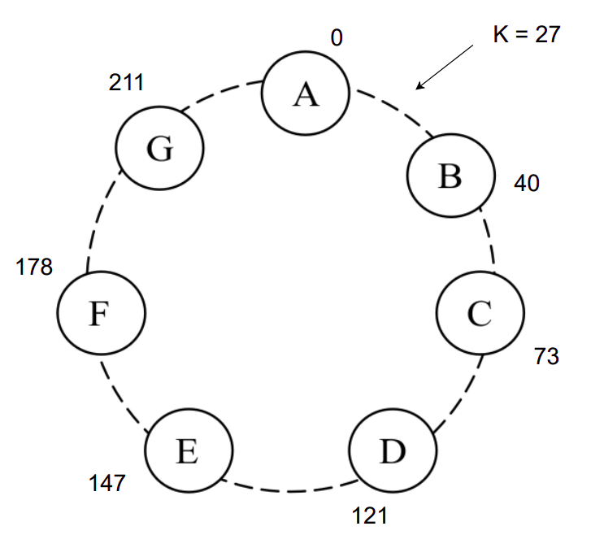
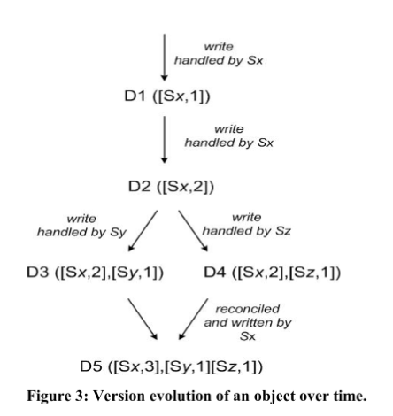

Dynamo: Amazon’s Highly Available Key-value Store
del Mazo, Federico - 100029
Mermet, I. Javier - 98153
Ventura, Julián - 102391
Mermet, I. Javier - 98153
Ventura, Julián - 102391
Dynamo: Amazon’s highly available key-value store

Motivación
- Query model
- Operaciones simples
- Costos asociados a un RDBMS
- Propiedades
ACID- Disponibilidad pobre
- Eficiencia
- Otras asunciones
- No-hostil
SLA y Problemas de negocio
- 99.9th percentile
- Lógica liviana
- Rol importante de los Data Stores
Consideraciones de diseño
- Data store eventualmente consistente
- Resolución de conflictos
- Aplicación
- Data store
- Always writable
Principios clave
- Escalabilidad incremental
- Simetría
- Decentralización
- Heterogeneidad
Arquitectura de Sistema
“DynamoDB can be characterized as a zero-hop DHT, where each node routes a request to the appropiate node directly”

Interfaz
- Define dos simples funciones
get(key)->(object, context)put(key, context, object)->()
Particionado
Distribuir los datos de forma uniforme entre los nodos
Solución Naive
- Función de hash:
H(k) = f(k) % n_nodos_sistema - Problema: Al modificar cantidad de nodos hay que recalcular todos los hashes!
Solución de Dynamo
- Técnica de hashing consistente
- Función de hash:
H(k) = f(k) % mm>>n_nodos_sistema
- Se ordenan los nodos en una topología de anillo, de forma aleatoria.
- Cada nodo administra claves del rango previo
- Función de hash:
- Nodos virtuales o tokens
Particionado

Replicado

El coordinador replica a los
N-1 siguientes nodos del anilloTodos los nodos conocen las responsabilidades del resto
Los datos se distribuyen en nodos físicos, no virtuales
Versionado de datos
Consistencia eventual -> Si opero YA, genero una inconsistencia entre nodos
Cómo hago un merge de las distintas versiones?
- Syntactic Reconciliation: Si una versión nueva supera la antigua, simplemente la reemplaza
- Semantic Reconciliation: Si no hay manera obvia de elegir la versión superadora, el cliente decide acorde a sus necesidades de negocio
- Reglas de negocio -> Shopping Cart
- “Last Write Wins” -> Session Info
Versionado de datos
Una versión? Un Vector Clock!
(nodo, contador)

Ejecución de Operaciones
En Busca del Coordinador
- Cualquier nodo puede recibir peticiones de usuario sobre cualquier clave.
- Al momento de recibir una petición sobre una clave
k, el nodo deberá:- Resolverla únicamente si pertenece a la preference list de dicha clave.
- Caso contrario, deberá enrutar a algún nodo saludable de los primeros
Nde la lista de preferencia.
- La lista de preferencia se transmite de nodo a nodo a través de un protocolo de chisme.
Ejecución de Operaciones
Resolviendo la Consulta
- Se busca lograr un balance entre performance, availability y durability, que sea configurable
- Se logra a través de un Sloppy Quorum
- Se configuran dos valores,
RyW. - Ante una lectura,
Rnodos deberán responder antes de darla por finalizada. - Ante una escritura,
Wnodos deberán responder antes de darla por finalizada.
- Se configuran dos valores,
- Al recibir una petición, el coordinador:
- Resolverá la petición localmente.
- Enviará la petición a los primeros
Nnodos saludables de la preference list. - Esperará a la respuesta de
W-1 oR-1 nodos, si se trata de una escritura o lectura. - Responderá al usuario.
- Al aumentar
Wse reduce performance y availability, pero mejora durability - Al aumentar
Rse reduce performance y availability, pero mejora consistency. - Estos valores se configuran en función de la aplicación y los SLAs
Manejo de fallas: Hinted Handoff
Sloppy Quorum
Data center failure
Replication across multiple data centers
Manejo de fallas permanentes: Sincronización de réplicas
Fallas momentáneas
Protocolo anti-entropía
- Arboles Merkle
- Detección de inconsistencias
- Minimizar transferencia de datos
- Nodos que dejan o se unen
Membresía y Detección de fallas: Pertenencia al anillo
Mecanismo explicito
Gossip based protocol
Startup
Membresía y Detección de fallas: Descubrimiento externo
Anillo lógicamente particionado
Membresía y Detección de fallas: Detección de fallas
Evitar intentos fallidos de comunicación
Protocolo de rumores
Agregando y removiendo nodos de almacenamiento
Asignación de tokens
Distribución uniforme en los nodos
Confirmation round
¿Preguntas?